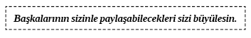
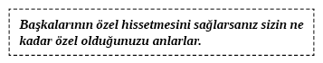

4. BÖLÜM - İLİŞKİ KURMAK: BAŞARILI İLETİŞİMİN TEMELİ
O GÜNÜ ÇOK İYİ HATIRLIYORUM. Konuşmacı olarak bir topluluğa hitap ettiğim ilk gündü. Yıl 1987. Konu uyuşturucu kullanımının engellenmeydi. Yer ise Minnesota’da bir liseydi. Yıllarca Minnesota okulları CESARET adında bir uyuşturucuyu engelleme programını uyguluyorlardı. Bu program, bilgisiz polis memurlarının çocuklarla uyuşturucu kullanmanın aptallık olduğuyla ilgili konuşmasına dayanıyordu. 1980’lerin başında programın işe yaramayacağı ve muhtemelen çocukların uyuşturucu kullanmasını sağlayacağını tahmin etmiştim. Bir zamanlar ben de çocuktum ve bilgisiz bir polis memurunu dinlemenin korku yaratabileceğini ve boyun eğmeye neden olabileceğini çok iyi hatırlıyordum. Ancak kesin bir şey varsa o da bu başarısız girişimin işi başkaldırmaya vardıracağıydı. Tahminlerimi sosyolojik ilkelere dayandırarak Minnesota eyaletindeki bütün okul yöneticileriyle paylaştım. Bazıları aynı fikirdeydi ama çoğu değildi.
Amacı, çocukların uyuşturucu ve alkolden uzak durmasını, hiç başlamamalarını sağlamak olan Başarı Dinamiği isimli bir vakfın kurulmasına yardım ettim. Yaklaşımımız açıkça radikaldi. CESARET programına genel bakış açımıza yönelik aldığım direnç çok tatmin ediciydi. Kime sorduğunuza bağlı olarak birçok kişi kafa sallayarak evet ve hayır diyordu.
Yine de gerçekler ortadaydı. CESARET, bulabildiğimiz bütün öğrencilerde uzun süreli davranış değişikliği sağlamayı başaramamıştı. Bazı eyaletlerde ise işe yaramayıp tam tersi etki yaratmış gibi görünüyordu. Peki, biz nasıl farklı yaratacaktık?
Raporun ilkelerini çok iyi anlayarak okula girdim. Bazı iletişim yöntemlerini kullanarak gruplarla hipnozun nasıl uygulanacağını biliyordum. Hangi öğrencilerin bir bütün olarak uyuşturucu, alkol ve sigara kullanımına inanacağını biliyordum. (Çoğu çocuk büyük olduğu için birini veya hepsini düzenli kullanıyordu. Milenyuma girdiğimiz şu dönemde hâlâ kullanıyorlar.)
Elimden geldiğince, bin iki yüz öğrencinin çoğunun gözlerinin içine baktım.
“Başlamadan önce şunu belirtmeliyim. Buraya size uyuşturucuyu bırakmanızı söylemeye gelmedim. Asla başlamamanızı söylemeye gelmedim. Adamın teki okulunuzdaki bir toplantıya gelip size uyuşturucunun ne kadar kötü olduğuyla ilgili durmadan boş boş konuşuyor diye değişmenizi söylemek için burada değilim. Yapacağımız tek şey çeşitli uyuşturuculara ne yaptıklarına, ne yapmadıklarına ve birinin hayatını etkileyip etkileyemeyeceklerine bakacağız” diye belirttim.
Onlara, “1980’lerin başında alkol ve uyuşturucu kullandım. Sigarayı asla içemiyordum; çok kötü koktuğu için beni iğrendiriyordu. Uyuşturucu ve alkolle ilgili deneyimlerimin bazıları mükemmel bazılarıysa korkunçtu. Sizlere bir gece arkadaşlarımla içmeye gittiğimizde yaşadığım mükemmel deneyimi anlatmak istiyorum” dedim.
Tabii ki başlangıçta anlattıklarım öğretmenleri ve yönetimi çılgına çevirdi. Müzik odasında idam düzeneği hazırladıklarını ve beni asabilmek için bitirmemi beklediklerini hayal edebiliyordum. Stratejimin bu grup için doğru olması için dua ederek ben bile kendimi sorguluyordum. Benden büyük birkaç arkadaşımla içmeye gidişimizin eğlenceli hikâyesini anlattım. Sarhoş olduğumuzu ve dini konuları, hayatın anlamını, arkadaşlığımızın önemini konuştuğumuzdan bahsettim onlara. Sarhoş olduğum kısmı anlatırken bilerek iyi bir mesaj veriyormuşum havasına büründüm çünkü bütün olumsuz hisleri sunumumun ikinci kısmında uyuşturucu kullanmak ya da kullanmayı düşünmekle bağdaştıracaktım.
Aramızda etkin bir bağ kurmuştum. Öğrenciler gülüyor ve sunumumu daha ilgiyle takip ediyorlardı. Bir zamanlar sarhoş olduğumda geçirdiğim iyi vakitten bahsettiğime ve bunu okulun parasını alarak yaptığıma inanamıyorlardı. Onları rahatlattım ve savunma kalkanları kalktı. Topluluğun ilgisini kazanınca uyuşturucu karşıtı mesaj vermek üzerine çalıştım. Bu denemem güçlü, derin ve çok etkiliydi. İyi bir arkadaşımın askerdeki ilk yılında uyuşturucu sattığı için nasıl yakalandığını anlattım. Onur kırıcı bir şekilde askerlikten atılmış ve bu tek hatası yüzünden asla iyi bir iş bulamamıştı. Onlara bir keresinde arkadaşımdan aldığım marihuanayı içtiğimi sandığımda neredeyse aşırı doz fensiklidin2 (PCP) yüzünden nasıl ölümün eşiğine geldiğimi anlattım. Bu dördüncü veya beşinci kez marihuana alışımdı ama son oldu. İçki içip araba kullanan insanların nasıl sakatlandığına dair hikâyeleri de görmelerini sağladım. Her yolu denedim ve öğrencilerin çoğu sunumun sonunda gözyaşları içindeydi. Kapanışı şöyle yaptım.
“Bugünkü amacım buraya gelip bir karar verdiğimizde başımıza gelen iyi ve kötü şeyleri paylaşmaktı. Söylediğim herhangi bir şey yüzünden ot çekmeyi veya sarhoş olmayı bırakmanızı istemiyorum. Ben sadece her gün bir nefes çektiğinizde veya biraz viski yudumladığınızda olanlara göz atmanızı diliyorum!”
Büyük alkış koptu. Bütün öğretmenler bana afallamış bir şekilde baktılar. Onlardan da bazıları alkışladı. Daha sonra bazı sınıflara gidip öğrencilere sunumumla ilgili ne düşündüklerini ve onu iyileştirmek için önerileri olup olmadığını sordum.
“İnsanların nasıl altüst olduğuyla ilgili daha çok hikâye anlatın.”
“İnsanlar ot çektiğinde vücuda neler olduğuyla ilgili kısma daha çok vakit ayırmalıydınız.”
Yalnızca birkaç öğrenci, “Kafa iyiyken bunun ne kadar güzel hissettirdiğiyle ilgili yeteri kadar konuşmadınız” dedi. “İyi fikir. İnsanlar bunun eğlenceli olabileceği ve her zaman ölüm veya felaketle sonlanmayacağını bilirlerse daha gerçekçi olur. Teşekkürler!” şeklinde yanıt verdim. Herkesten gelen yorumu onayladım.
Programımız ulusal ilgi görmüştü ve çoğu iyiydi. 1994 yılında okullarda bizim yaptığımız şekilde bilgi vermek zamanın politikasına uygun düşmediğinde çalışmamızı bitirdik. Yazık oldu çünkü fark yaratıyorduk. Alınacak ders tabii ki de basitti: İnsanlar onaylanmak ve hisleri konusunda dürüst olduklarında rahat hissetmek ister. Güvenle konuşabileceklerini bilirlerse kendileri hakkında çok fazla şeyi size açacaklardır.
İnsanlar rahat olmak ister. Çoğu insan iletişimi sevmenize fırsat bırakmayan hatta daha kötüsü düşmanca ve kaba, kişisel ya da kurumsal çevrelerde yaşar. İnsanlar bizim yanımızda huzurlu hissetsin isteriz.
Bu bazen insanları rahatlatacağını bildiğimiz şeyleri yapmamız gerektiği anlamına gelir. Arada bir bağ kurmak kulağa tuhaf gelen ama başkaları tarafından sevecen ve duyarlı olarak algılanan şeyleri yapmayı veya söylemeyi kapsar.
Birçok insan kendileriyle ilgili konuşmaktan hoşlanır ve muhtemelen bunu istedikleri kadar sıklıkla yapamazlar. Bu, değerlerin belirlenmesi yönteminin bu kadar önemli ve etkili olmasının nedenlerinden biridir. İnsanlara değerleriyle ilgili soru sorduğunuzda onlara en güçlü hisleri ve düşünceleriyle ilgili soru soruyorsunuz. Bunları sormak insanları anlamada çok önemli bir unsurdur ve ilişki kurmada büyük yardım sağlayabilir.
İlişki kurmak iki veya daha fazla insan arasında yakınlık olarak algılanır.

Çoğu insan ilgili olmaları gerekirken ilginç olmaya çalışıyor gibiler. Tam anlamıyla gerçek bir konuşmacı meraklı bir insandır. Başkaları hakkında daha çok şey bilmek ister. Onunla paylaşabilecekleri karşısında büyülenir. Bazı insanlarla nasıl ilgilenebildiğinizi merak edebilirsiniz. Onların ilgilendikleri sizi cezbetmiyorsa o şeyle nasıl ilgilenmeye başladıklarını keşfedin. Yani balık tutmayı sevmiyorsanız ve iletişim kurduğunuz kişi seviyorsa balık tutmak konusunda nasıl bu kadar heyecanlandıklarını öğrenin. Bu hayranlığı başlatan ne gibi deneyimleri var?
1989 yılında üvey kardeşim Chuck Welch’i Maine3’de ziyaret ettim. Chuck’ı yıllardır görmemiştim ve bunca yıldan sonra görüştüğümüzde ne beklemem gerektiğinden emin değildim. Eşim ve ben Maine’e vardığımızda, Chuck, “Birkaç yıldır ton balığı avlıyorum. Zor iş” dedi.
Okyanusta bir avuç küçük balığın nasıl yakalanacağını merak ettiğimi hatırlıyorum. Bir ağ atıyorsunuz ve o küçük hayvancıklardan birkaç bin tane çekiyorsunuz. Bunu denemek ister miydim?
“Tabii ki de. Hadi gidelim!”
Chuck okyanusun yakınlarında yaşıyordu. Logo, ışık ve sirenleri olmayan ambulansa benzer bir aracın yanına götürüldük. Yolculuk ve uzun süredir kayıp üvey kardeşimle geçireceğim özel zaman konusunda gerçekten istekliydim. Küçük balıkları görmek umurumda değildi. Chuck ambulans benzeri arabanın bagajını açtı ve orada bir ton balığı duruyordu.
“365 kilo kadar geliyor. Oldukça iyi bir boyut değil mi?”
Ağzım açık kaldı. “Bu küçük bir tenekeye nasıl sığıyor?”
Bunu gerçekten söyledim. Yol boyunca küçük ton balığını küçük bir tenekenin, tek bir tenekenin içine nasıl sığdırdıklarını düşünüp durdum. Sonra bunu, bu canavarı gördüm. Anladığım kadarıyla bu bir balinaydı.
“Bu şeyleri nasıl yakalıyorsunuz? Bunları yakalamak için kocaman bir geminiz olması gerekir.”
Chuck nasıl ton balıkçısı olduğunu, balığı yakaladığını ve kaç para ettiklerini anlatıyordu. Açık denizde balığa çıktığında yunusların ağlara takılmasını ve onları serbest bırakmak konusunda ne kadar dikkatli davrandığını anlattı. Büyülenmiştim!
Minnesota’ya döndüğümde eyaletteki tüm öğrenciler için uyuşturucuyu engellemek adına para biriktirmeye devam ettim. Bir gün St. Paul’daki Carbone bayiliği sahibi John Neumann’la konuşmaya gittim. Bunun Maine’e seyahatimden hemen sonra olduğunu hatırlıyorum.
“Merhaba Kevin. Seni bu yıl tekrar görmek ne güzel. Biraz daha para için mi geldin?”
“Evet. Bu yıl senden yine bağış almam gerekiyor. Neler yaptın John?”
“Bu yaz çok balık tuttum. Çalıştım ve balık tuttum.”
Bu Minnesota’da ortak bir durum. Çalışmak ve balık tutmak.
“Gerçekten mi? Ne tür balık tutuyorsun?”
“ Çoğunlukla tatlı su levreği.”
“Hmm...” (Sanki tatlı su levreğinin ne olduğunu biliyormuşum gibi.)
“Aslında geçen hafta birkaç tane büyük yakaladım.”
Maine’den yeni döndüğüm için tatlı su levreğinin ne kadar büyük olduğunu tahmin etmeye çalıştım. 365 kiloluk bir ton balığının okyanustan çıktığını keşfettim. John, Minnesota’daki göllerde avlanıyordu. Bu nedenle %5 olarak hesapladım.
“Ne kadar gelirler? Yaklaşık 19 kilo mu?”
“Hayır Kevin. Her biri yaklaşık iki kiloydu. Balık tutmakla ilgili bir şeyler bildiğini sanmıştım.”
Hayır, bilmiyorum ama bilmediğim bir şeyi biliyormuş gibi yaparak kendimi nasıl aptal durumuna düşürdüğümü biliyorum.
“Hayır. Ancak üvey kardeşim Maine’de 365 kiloluk ton balığı yakaladığını anlattı. Oradan yeni geldim.”
John sözümü kesti.
“Kevin o ticari açık deniz balıkçılığı. O bambaşka bir şey. Tatlı su levreği tutmak çok özeldir.”
John yıllar süren balıkçılık deneyimlerini uzun uzun anlattı. Balıkçılıkla ilgili çok fazla soru sorduğum için gelecekteki konuşmalarda kendimi tutmama yetecek kadar çok fazla şey öğrendim. Yem, olta ve sapının ne kadar ağır olduğu, ne tür ekipman kullandıkları, gölün neresinde ve nasıl balık tutmaya karar verdiklerini sordum. Balıkçı teknesinde hiç bulunmamıştım ama tatlı su levreği tutmakla ilgili artık bir şeyler biliyordum.
Alınacak ders basitti. Gerçekten doğru soruları sormaya yetecek kadar meraklı olsaydım alanının en iyileriyle konuşmayı öğrenebilirdim. Bugün bir şey bilmediğimde, “Bu konuda hiçbir fikrim yok fakat açıklarsanız çok memnun olurum” diyorum.

Bir gün Chicago’nun kenar mahallerindeki Barnes and Noble adlı kitapçıya gittim. Mükemmel bir cumartesi günüydü ve orada bir imza günü düzenleyecektim. Tabii her yazarın korkusu, imza gününün muazzam ilgi göreceğini düşünürken sadece birkaç kişinin gelmesidir. Bundan daha aşağılayıcı bir şey olamaz. O gün öyle günlerden biriydi.
İkna Taktikleri kitabım 1996 yılının ortalarında çıktı ve halkın tamamı tarafından sıcak bir şekilde karşılandı. Kitap iyi sattı ve ikna edici iletişim üzerine bir el kitabını anlamak kolay olduğu için hâlâ çok satıyor. Ancak o cumartesi günü durum farklıydı.
Yirmi iki kitaplık bir desteyle masamda oturuyordum ve ufukta bir kişi bile yoktu. Hayal kırıklığına uğradığımı belirtmem gerekir. Yılın bu ilk güzel bahar günüyle kıyaslanamayacağımı anlayıp kitap destesinin arkasına saklanmayı bıraktım ve kitapçıda dolaşmaya karar verdim. Benimle aynı durumu yaşamış herhangi birinin hissedebileceği kadar aşağılanmış hissederken dört-beş yaşında tekerlekli sandalyedeki kızı gördüm. Oturma şeklinden ağır bir beyin felci veya multipl skleroz (MS) hastası olduğunu tahmin ettim. Konuşamıyordu. O küçük güzel ağzını kıpırdatamıyordu bile. Annesi kitapların arkasından geldi ve beni kızıyla konuşmak için yere diz çökmüş halde gördü. (İlkokul öğrencileriyle çalıştığımda onların göz hizalarına inmenizden hoşlandıklarını öğrendim.)
“Benim adım Kevin. Orada tek başıma otururken bana baktığını gördüm. Gerçekten bana mı bakıyordun?” dedim.
Kafasını sallayarak onayladı.
“Burada oturup biraz seninle konuşabilir miyim? Biraz yalnızım ve konuşacak kimsem yok.”
Yine kafasını sallayarak onayladı.
“Teşekkürler. Şuradaki annen mi?”
Annesini işaret ettim ve küçük kız gülümseyip onun annesi olduğunu belli edecek şekilde kafasını salladı. Ceketimdeki ‘BAŞARI’ yazan broşa baktı.
“Buna mı bakıyordun?”
Kafasını ‘evet’ anlamında salladı.
“Bu ‘başarı’ kelimesi. Bir şeyi iyi yaptığın anlamına gelir.”
Broşu çıkarıp eline koydum. Elini kapattı.
“Bunu elbisene takabilir miyim?”
Kafasını salladı ve broşu elbisesine taktım.
“Harika! Şimdi annenle konuşurken ona bir başarı olduğunu söyleyebilirsin.”
Annesi geldi ve yanımda diz çöktü.
“Teşekkürler Kevin” dedi kızı yerine.
“Çok güzel bir kızınız var” dedi.
Annesi gibi gülümseyerek suratına baktım ve göz hizasında onunla konuştum.
“Teşekkürler. Evet, kızım gerçekten de güzel. İmza gününüz bugün pek iyi gitmedi.”
Küçük kıza ve sonra annesine baktım.
“Şimdiye kadarkilerin en iyisi.”
Onunla tanıştığıma memnun olduğumu söyleyerek kızı alnından öptüm ve kitapçıdan çıkıp sonraki imza etkinliğime gittim.
Birkaç hafta sonra reklamcım Lynda Moreau, kitapçının müşteri hizmetleri temsilcisinden bir e-posta gönderdi. Kitapçı temsilcisi, küçük kızın annesinin o gün neler olduğunu kendisiyle paylaştığı şekliyle Lynda’ya anlatmış. O da e-postayı bana gönderdi. Bunun sayesinde bir ay boyunca keyfim yerindeydi.
Genellikle biri için iyi bir şey yaparsanız bunu kimse öğrenmez. Normalde de böyle olmalıdır. Zaten bildiğiniz bir şeyin altını çizmek için olayı burada anlatıyorum. Ne kadar önemsediğinizi bilene kadar kimse ne kadar bildiğinizi bilmez. Küçük kızın adını asla öğrenmedim ama o zirvedeyken ona doğru bakacağımı biliyorum.
İletişim kurmak için konuşmak zorunda değilsiniz. Küçük güzel kız bütün ‘duymak’ istediklerimi gözleri aracılığıyla ifade etti. Gülümsemeleriyle bütün bir ayımın iyi geçmesini sağladı. Hayatınızın amacına ulaşmak, gerçek ilişkiler kurmak ve mutlu olmak için iletişim becerilerinde ustalaşmak gerekir. Her seviyede insanla her zaman etkin iletişim kurabilmeniz gerekir. Bir daha konuşamayan bir çocuk görürseniz belki onların göz hizasında, onların yerine konuşabilirsiniz.
İletişimde bağ kurma ve bunu koruma yeteneğiniz, önemseyen bir iletişimci olmanın temel becerilerinden biridir. Bağ kurmanın en mükemmel yazılı örneklerinden biri Yeni Ahit’te bulunmaktadır. Aziz Paul’ün4 Atina’ya gittiğinin hikâyesini hatırlarsınız. Atina’da o zamanlar Pagan kültürü hâkimdi ve mitolojik tanrılara adanmış put ve tapınaklarla doluydu. Musevi olduğundan Paul’e bütün bunlar itici geliyordu. Oralı bazı filozoflar Paul’ü bir toplantıya çağırdılar. Onu çok ünlü Mars Hill’e götürdüler. İşte burada Paul’ün bağ kurma ve insanlara dokunabilme yeteneğini görüyoruz.
“Atina halkı, size baktığımda ne kadar dindar olduğunuzu görüyorum.” (Bu hemen onların şüpheci düşüncelerini yıkar ve Paul’ün metaforik anlamda üzerinde yürüyebileceği anlık bir köprü kurar.)
“Çünkü taptığınız nesnelerin yanlarından geçip düşünürken üzerinde BİLİNMEYEN TANRI’YA yazılı bir mihrap gördüm. Bu yüzden bilmeden taptığınız onu size açıklayacağım.”
(Paul bağ kurma yeteneklerini ustaca kullanır. Mihrap, Yunan tapınak nesnelerinden biridir. Üzerinde konuşmak istediği Yunan tanrılarından biridir. Yeni bir tanesi hakkında konuşmayacaktır.)
Dünyayı ve içindeki her şeyi yaratan Tanrı, yer ile göğün efendisi olduğundan elle yapılan tapınaklarda bulunmaz. (Onlara Tanrı’nın dünyayı yarattığını, bir insan tapınağında yaşayamayacak kadar büyük olduğunu söyler.)
Paul konuşmasına Tanrı’nın bize hayat, nefes ve yaşayacak bir yer verdiğini söyleyerek devam eder. Tanrı’nın bizim hiçbir şeyimize ihtiyacı olmadığını anlatır.
“Onun için yaşıyoruz, hareket ediyoruz ve varlığımızı sürdürüyoruz ve SİZİN ŞAİRLERİNİZİN DE SÖYLEDİĞİ GİBİ onun evlatlarıyız... Bu yüzden, biz Tanrı’nın evlatları olduğumuz için bu ulvi varlığın altın, gümüş ya da taş gibi sanatla ve insan eliyle şekillenmiş bir şey olduğunu düşünmemeliyiz.”
Paul, Yunan otoritelerine geri dönerek ve onlardan alıntı yaparak bir kez daha bağ kurmayı başarıyor. İlişki kurmak ile iletmek istediğiniz mesaj için köprü oluşturmak başka şey.
“Gerçekten Tanrı bu cehalet zamanlarını küçümsedi. Ancak şimdi tüm insanlara tövbe etmelerini emrediyor çünkü o, dünyayı hakkaniyet içinde buyurduğu insanlarla yargılayacağı bir gün belirledi. Herkesi dirilterek bunun garantisini verdi.”
Paul mesajının en önemli kısmına ulaşmış ve dinleyicilerinin dikkatini üzerinde tutmuştu. Paul’ün burada başarılı iletişiminin en önemli unsuru muhalif filozoflarla kurduğu bağdı.
Kurulan bağ tabii ki sözlü iltifatlardan ve övgülerden çok daha fazla şey ifade eder. Sözlü olmayan davranışları da kapsar. Bağ kurmayı artıran sözlü olmayan davranışlar İkna Psikolojisi kitabımda detaylı olarak bulunmaktadır. Bağ kurmaya yarayan sözlü olmayan iletişimin bazı önemli unsurları aşağıda incelenmektedir.
Sözsüz Bağ Kurma Becerileri
1) Fiziksel Görünüm. Bir bireyin kıyafeti ve bakımlı olup olmaması birini ya rahat ya da uygunsuz hissettirebilir. Çoğunlukla nasıl giyindiğimiz insanların bize ne kadar güveneceği ve bizi ne kadar seveceğini belirler. Her durumun kendine özgü uygun giyinme tarzı vardır. İnsanların huzurlu hissetmelerini sağlamak için belli şekilde giyinmek iletişimin yapay bir kısmı gibi görünse de aslında çok gerçekçidir. İletişim kurduğunuz insanların rahat hissedeceği şekilde giyinirsiniz. Başkalarının giyindiği gibi giyinme ihtiyacınızın ve arzunuzun ötesine geçtiniz.
1982 yılında Wisconsin Üniversite’sinde ikinci sınıf öğrencisiydim ve ‘Sözsüz İletişim’ adlı bir dersi alıyordum. Ders notunun yarısı, sözlü olmayan iletişim konusunda araştırma yaptıktan sonra herkesin yazacağı bir makaleden verilecekti. Bu makale mini bir tez gibiydi. Benim konum, bir insanın giyinme tarzının o kişiyle mağazalarda ne kadar çabuk ilgilenildiğiyle olan ilişkisini görmekti.
Bana yardım etmesi için bir arkadaşımı dâhil ettim. Onunla yaptığımız şey rol yapmaktı. Ben nişan yüzüğü bakıyordum. O da benim sağdıcımdı. Minneapolis ve St. Paul’deki birçok kuyumcuya gittik. Gittiğimiz mağazaların yarısında üzerimizde kot ceket, tişört ve kot pantolon vardı. Diğer yarısındaysa takım elbise, kravat ve klasik ayakkabı giymiştik.
Bizimle ilgilenilene kadar beklediğimiz süreyi ölçtük. Sonra da tezgâhtar güvenlik çağırmadan kilit altından çıkarabileceği en pahalı yüzüğü gösterirken onun fiyatını sorduk.
Takım elbise ve kravatlıyken kot giydiğimizden üç kat daha az bekledik. Mağazadaki en pahalı mücevherleri istediğimizde kot pantolonlu halimizden beş kat daha pahalı mücevher görebildik.
Bir kişinin giyinme tarzının aldığı hizmetin kalitesi, rahatlığı ve hızıyla doğrudan ilişkili olduğuna hiç şüphe yoktu.
2) Sesle İlgili Belirtiler. İletişim kurduğunuz kişinin konuşma hızı ve tonuna uyum sağlayarak bağ kurmak en iyisidir. Diğer insanı taklit etmek gerekmez. Sadece diğer insanla konuşma tarzınızı değiştirin.
Benim kişisel eğilimim özellikle iş hayatında çok hızlı konuşmak ve işlerin oldukça çabuk gerçekleşmesini sağlamaktır. Bu konuşma hızı komedyenler, topluluk konuşmacıları ve topluluk önünde sunum yapan herkes için geçerlidir. Böyle durumlarda kişi gerekirse yavaşlayabilir. (Genellikle bunu düzenli bir şekilde yapmak uygundur.) Yavaş ve monoton bir şekilde konuşmak dinleyicinizin saygısını kaybetmenin kesin yoludur. Topluluk konuşmacısı ve şirket eğitmeni olarak çalıştığım yıllarda, en çok işe yarayan şeyin biraz çeşitlilik olduğunu öğrendim. Özellikle ciddi konulardan konuşurken yavaşlar ve daha ölçülü konuşurum. Daha önemsiz konulardan konuşurken yeterince hızlı olan normal süratime dönerim. Dinleyiciler bu formüle olumlu cevap verdiler ve gelecekte de böyle yapacakları kesindir.
3) Duruş ve Psikoloji. Bağ kurmanın en etkin yöntemlerinden biri, konuştuğunuz kişinin duruş ve psikolojisine uyum sağlamaktır. Aynı tarzda oturur veya ayakta durursunuz. Bu ‘hızı ayarlama’ olarak adlandırılır. Gerçekten bağ kurup kurmadığınızı daha sonra iletişimi ‘yöneterek’ kontrol edebilirsiniz. Yönetmek derken, örneğin ikiniz de kollarınızı serbest bırakmış oturuyorsanız siz bacak bacak üstüne atın. Diğer insan bağ kurduğunuzu farz ederek sizi kısa sürede takip eder. Diğer kişiyi etkin biçimde yönettikten sonra düşüncelerinizi ve aklınızdakileri daha birbiri ardına paylaşabilirsiniz.
Birkaç ay önce bir sunumumda hızı ayarlama ve yönetme tekniklerini gösteriyordum. Dinleyiciler arasındaki bir beyefendiden dinleyicilerin geri kalanına bağ kurmayı gösterirken bana yardımcı olmasını istedim.
Oturduktan sonra, onun oturduğu gibi oturdum. Dinleyicilere, bilerek beyefendi aynısı yaptığı için nefesimi yavaşlattığımı, daha düz oturduğumu ve kollarımı kavuşturduğumu açıklamaya başladım. Bir süre sonra onun daha rahat hissedeceğini ve gevşeyeceğini söyledim. Ona işiyle, ne kadar zamandır orada olduğuyla ve kendisiyle ilgili sorular sordum. Son olarak onun görüşünü ciddiyetle onaylayarak son seçimlerle ilgili açıkça yorum yapmasını sağladım. Son seçimlerde ne kadar şanslı olduğumuzdan bahsederken kafasını benimkiyle aynı anda sallamaya başlayınca bu kez hemen duruşumu değiştirip kavuşturduğum kollarımı serbest bıraktım. O da hemen aynı şeyi yaptı ve bir bağ kurduğumu fark eder etmez onu yönettiğimi belirttim. Biz politikadan konuşurken kendini rahat hissettiğini ve kollarını serbest bıraktığının farkında bile olmadığını doğruladı.
Daha sonra bu beyefendi yerine döndü ve bir başkasını çağırdım. Bu kez katılımcıyı vücudu belli bir pozisyon alınca deneyimiz bitene kadar o pozisyonu koruması gerektiği konusunda uyardım.
Öyle yapmayı kabul etti. Bacak bacak üstüne attı ve kambur bir pozisyonda oturuyor, kendinden önceki katılımcıdan daha derin bir şekildi nefes alıyordu. Ona benimkilerle hiçbir şekilde uyuşmayan işini ve politik görüşünü sordum. Sonra spordan konuşmaya başladık ve Minnesota Vikingleri’nden ve 1998 yılında Super Bowl’u5 kazanmaya ne kadar yaklaştıklarından bahsettik. Ona Atlanta Falcons’ı neden yenemeyeceklerini sordum ve bana ne düşündüğünü anlatmaya başladı. Hareket etmeye başladığı anda kollarımı açarak onu yönettim. Sol kolumun açıldığını görünce sağ kolu hareket etti. Ön sırada oturanlar bunu görüp güldüler. Benim yaptığımı yapmadı ama göstermeye çalıştığım şey açıktı. Onunla bağ kurmuştuk. Duruşunu değiştirmese bile onu yönetmeyi başarmıştım çünkü duruşunu değiştirmek istedi!
4) Nefes alma. Diğer kişinin nasıl ve nereden nefes aldığını izleyin. Bağ kurmanın güçlü bir yöntemi olarak kişinin nefes alma hızına uyum sağlayabilirsiniz. Aynı hızda nefes alan insanlar genellikle birbirleriyle uyum içindedirler. Örneğin biriyle cinsel anlamda birlikte olduğunuzda nefesleriniz birbirine uyum sağlar.
Film izlerken yan yana oturan insanlar özellikle film dramatik veya korkunçsa genellikle birbirleriyle uyumlu nefes alırlar. Bazı hisler belirli nefes alma tarzlarını beraberinde getirebilir. Fırsat olursa bunların insana çok faydası dokunabilir.
Bütün bu bağ kurucular bizi etkin iletişimi içeren önemli bir anahtara götürürler: Amacınız insanları derin ve samimi ilişkilere çekmekse sıklıkla kendinizden çok başkaları gibi olmalısınız.
Biriyle tam bir bağ içinde bulunduğunuzu anı hatırlayın. Bu ikinizin de neredeyse aynı şeyi düşündüğü bir zaman dilimidir.
Birbirinize yakın mı oturuyordunuz?
Psikolojiniz benzer miydi?
Böyle başka bir zaman daha düşünün ve aynı soruya cevap verin.
Biriyle bu uyum anını yaşadığınızda şanslı gününüzde olduğunuzu veya coşku ve daha yoğun duygular hissettiğiniz oldu mu?
Aşağıda boşluğa veya not defterinize vücudunuzla ilgili kendinize güvendiğiniz bir zamana dair anılarınızı yazınız.
Başka bir insanla veya bir gruplayken çok rahatsız hissettiğiniz bir andan bahsediniz.
Bu bölümde öğrendiğiniz bilgileri kullanarak bu durumda nasıl daha rahat olabilirdiniz? Düşüncelerinizi yazınız.
Sözler Bağ Kurma veya Yıkmada Nasıl Etkili Olur?
Genç insanlarla gerçekten bağ kurmanıza ve onlara öğrenmelerinde ilham kaynağı olmanızı sağlayacak sihirli bileşimi hiç merak ettiniz mi? Hiçbir gence öğretmenini neden sevdiğini sordunuz mu? Çocuklarınıza mükemmel bir öğretmenin nasıl olması gerektiğini düşündüklerini sorun? En sevdiğiniz öğretmenlerinizi hatırlayın. Onları neden severdiniz? Öğretmen, antrenör, ebeveyn ya da herhangi bir tür eğitimciyseniz Wendi’nin bu bölümdeki hikâyesi muhtemelen size de tanıdık gelecek.
Okul günlerinizi düşünürseniz katlanamadığınız öğretmenlerinizi net bir şekilde hatırlarsınız. Bu öğretmenler size kendinizi küçük, aptal veya yeterince iyi olmadığınızı hissettirdikleri, sizi utandırdıkları için daha kolay akla gelir. Üzerinde daha çok düşünürseniz bu öğretmenlerin ortak yönlerini daha çabuk bulmaya başlarsınız. Öğrencileriyle onların anlayacağı dilde iletişim kurmak için gereken sözlü iletişim becerileri yeterli değildir. Öğrencinin öğrenmek veya yaşamak üzere olduğu şeye yönelik algısının açılmasını sağlayacak ruh halini yaratmayı başaramamışlardır. Ne yazık ki bu öğretmenler ya güçlü ve algısal bir öğrenme ortamı oluşturmayı öğrenmemişlerdir ya da bunu öğrenmeye isteksizlerdir.
Wendi Friesen uzun bir süre herhangi bir şey hakkında nasıl hissettiğimizi belirleyecek on dakikalık bir bağ kurma hikâyesini anlatıyor.
Kısa zaman önce oğlumun okulundaki veli toplantısına gittim. Aileler, öğretmenlerin yıl boyunca öğrencilere ne öğreteceklerini anlatacakları her sınıfta onar dakika geçireceklerdi. Oldukça basit bir işti.
Bunun benim için ilginç yanı, her öğretmenle kurduğum iletişim ve bağın (var ya da yok) sonucu olarak her on dakikalık kısımda neler hissettiğimi not etmemdi. Her on dakikada, durumum (vücudum ve zihnimin hissettikleri) öğretmenin seçtiği sözlere ve zemin hazırlayan sözsüz iletişime göre büyük oranda değişiyordu. Böylece bir on dakika boyunca neşeli ve umutlu hissediyor, sonraki on dakikada sıkılıp ilgimi kaybediyor, başka bir on dakikada ise merakla doluyordum. Bu şekilde devam ediyordu.
Her öğretmen aileleri mutlu edip onlara ilham vermek veya canlarını sıkıp kafalarını karıştırmak için değişik ifadeler kullanıyorlardı. Açık bir şey vardı ki o da bu sözlerin ve sözsüz iletişimin o yıl yüzlerce öğrenci için büyük ölçüde sonucu belirleyeceğiydi.
İlk sınıfta, liderlik öğretmeni omuzlar geride güven saçarak sınıfa girdi. (Daha o andan neşeliydim.) Net bir şekilde konuşup her birimizin gözlerinin içine bakıyordu. Sözleri anlatacağı şeyle ilgilenmemi sağladı. Daha fazlasını istiyordum. Liseye dönüp o sınıfta olmak istiyordum. Bize çocukları gerçekten önemsediğinden, sınıftakilerin eşsiz ve mükemmel olduklarından bahsediyordu. Liderlikteki diğer çocukların başarıya ulaşmak için yeteneklerini nasıl kullandıklarını anlatırken geleceği hayal etmemiz için bizi zorluyordu. Liderlik sınıfında bulunmanın nasıl hissettireceğinden bahsediyordu. Çocuklarımızın sınıfında olmasından ne kadar memnun duyduğunu dile getiriyordu. Vay be!
Daha sonra bilim sınıfına gittim. Bilimi seviyordum. Geçmişte Bunsen fırınında cam bükebildiğim veya solucanları parçalara ayırabildiğim derslerimi memnuniyetle hatırlıyordum. (Gerçekten!)
Ancak sonraki on dakikada öğretmen umuda dair edindiğim bütün hisleri yok etti.
Beni çok kısa sürede üzüntü, sıkıntı ve gerilim haline soktu. Yıl boyunca bazı sorunlar yaşanacağını söyledi. Çok fazla çocuk olduğu için laboratuvarı paylaşmak zorunda kalacaklarını ve bunun çocukları sıkıntıya sokacağını söyledi. Konuların bazılarının zorluğunu açıkladı ve çocukların anlamak için çok çalışmaları gerekeceğinin altını çizdi. Bunun onlar için sıkıntı yaratacağı ve aileler için de böyle bir durum oluşabileceğinden bahsetti. (Bunu uydurmuyorum.) ‘Sıkıntılı’ kelimesini kaç kez kullandığını saymaya başladım. On dakikadan daha kısa sürede bu kelimeyi on dört kez kullandı. Bizi doğruca geleceğe götürdü ama pek de ümitli değildi. Bu kadar sorunla sıkıntıya düşüleceği kesindi. Notunun kıtlığından bahsetti, ‘A’ vermeyi sevmiyordu. Geç ev ödevlerini kabul etmiyordu. Ancak bunların hiçbiri önemli değildi çünkü tek istediğim oradan bir an önce çıkıp beden eğitimi sınıfına gitmekti. Bu kadınla geçireceği zaman için oğlumla çok fazla empati kurabiliyordum.
Bu kadın ailelerde yarattığı aynı durumu çocuklarda da yaratacaktı. Oğlum o dersten ‘F’ aldı. Buna hiç şaşırmadık. Bir dönemde bilime olan sevgi sıkıntı ve gerginliğe dönüşmüştü. Bu arada öğretmen ‘sıkıntı’ kelimesini doğru telaffuz bile edemiyordu; son harfi atıyordu ve bu beni daha da sıkıntıya sokuyordu.
İki yıl boyunca özel bir okulda müzik öğretmeye başladım. Hiçbir eğitmen geçmişim yoktu ama ifadelerim ile beklentilerimin gücünü ve onların yaratacağı durumu biliyordum. Bir öğretmen olarak çok başarılıydım ama mükemmel olduğum için değil, ifadelerim sayesinde öğrencilerim orada bulunduklarına memnun oldukları için. Bu çocukların özellikle sevdiği ifadelerden biri ‘müthiş’ idi. Daha önce hiç ‘müthiş’ kelimesini kullanan bir öğretmenleri olmadığını söylediler. Küçük şeylerle mutlu olmanın tabu olup olmadığını merak ettim. Bu çocuklar bir kelime duyarak ilham alıyorlarsa iyi bir dil kullanımına açtılar.
İfadeler gerekliydi ve öğretmenler için çok önemliydi. Öğrencilerim beni onların bahanelerini kabul etmememle ve onlara ne yapamayacaklarını değil, ne yapacaklarını sormamla hatırlayacaklar. Bu çocuklar zihnin vücuda söylediğinin öyle ya da böyle elde edilebileceğini hatırlayacaklar. Bir çocuk çalacağı müziğe bakıp “Bunu çalamam” dediğinde bütün sınıf tepkimi görmek için bana baktı. Kendimize yapamayacağımızı söylediğimizde sonunda yapamayacağımızı biliyorlardı. Bu ifade karşısında genellikle verdiğim cevap şuydu: Yapamayacağını nereden biliyorsun?
Bu soru konuyu kapatırdı.
Eğer cevap, “Çok zor olduğu için” ise o zaman, “Sen mi öyle olmasını istiyorsun? Zor mu yoksa kolay olmasını mı istiyorsun? Çünkü yapabilirsin. Zor ya da kolay gerçekten sizin seçiminiz” derdim.
Yılın birkaç ayı geçtikten sonra çocuklar yeni müzikler öğrenip bana gülümseyerek bakarlardı ve, “Onu çalabilirim” derlerdi. Sonra da herkes gülerdi.
Bir kelimenin ya da cümlenin nasıl bir etki yaratacağı konusunda öğretmenlerin ve geriye kalan herkesin seçme şansı vardır. Aynı anlamı aşağıdaki cümlelerin ikisiyle de verebilirsiniz.
“Henüz bu konuda bilgi sahibi olmadığınız için ilk başta size zor gelebilir.”
“Bilgileri kavradıkça bu konuyu anlamak sizin için kolaylaşacak.”
İlk cümle bilinçaltında olumsuz bir his yaratacak bir şekilde algılanır. Bilinçaltı şöyle anlar:
1. Bir şey bilmiyorsunuz.
2. Zor olacak.
İkinci cümleyi şöyle anlar:
1. Cümlede ‘kavradıkça’ ifadesi geçtiğinden anlayacaksınız.
2. Konu kolaylaşacak ve kolay anlayacaksınız.
Cümleler teknik olarak aynı anlamdalar ama aynı hissi uyandırmazlar. Bizde uyanan hisse göre (kullandığımız ifadeler karşısında zihnimiz ve vücudumuzun nasıl hissettiği) algımız, açık, şaşkın veya aptal olduğumuzu belirleyen şeydir.
Başka bir örnek.
“Bir sonraki kısım zor gelebilir. Geçen yılki çocuklar hemen anlayamadılar. Bu nedenle hemen anlamazsanız endişelenmeyin.”
“Bir sonraki kısım daha zor olacak. Bu yılki en akıllı gruplardan birisiniz ve birlikte çok iyi iletişim kurduğunuz için eminim size geçen yılki gruptan daha kolay gelecek.”
İlk cümle şöyle algılanır:
1. Zor gelecek.
2. Anlamayacağınıza yönelik sonuçlara (geçen yılki sınıfın sonuçları) dayanan kanıtlar var.
3. Endişeleneceksiniz ve hemen anlamayacaksınız.
İkinci cümle şöyle algılanır:
1. Konu daha zor olacak.
2. Siz zekisiniz ve iyi iletişim kuruyorsunuz.
3. Sizden öncekilerden daha kolay bulacaksınız.
Aynı mesajı vermenin birden çok yolunun bulunduğunu anladığınızda, öğrencilerinizden almak istediğinizi almanın birçok yolunu keşfedebilirsiniz. Öğrencilerimin çoğu benim dünya üzerindeki en iyi öğretmen olduğumu düşünüyorlardı. Mükemmel bir öğretmen olduğumu düşünmüyorum ama çocuklar etrafımdayken iyi hissediyorlar. Nasıl yapılacağını bildiğim bir şeyi yapıyordum. Yani onlarda istediğim hisleri uyandıracak ifadeleri kullanıyordum.
Çocuklarınızın sıkıntılı, endişeli, gergin ve diğer başka olumsuz ruh hallerinde olmalarını istiyorsanız öyle ifadeler kullanın ve sık sık tekrarlayın. Hatta böyle hissetmemelerini belirtmek için de bu ifadeleri kullanabilirsiniz. Yüzlerce kez endişelenmemelerini söyleyebilirsiniz ve bunun tek etkisi endişe yaratmak olacaktır. Zihinlerimizin çalışma tarzı budur. “Rahatla, kendine güven. Böylece en iyi sonuca ulaşırsın” derseniz öğrencinizde, çocuğunuzda ya da kendinizde endişesiz bir ruh hali yaratmaya çok daha fazla yaklaşırsınız.
Bir öğretmen, antrenör ya da ebeveyn olarak sizin için en önemli şeyi kendi içinizde keşfedin. Öğrencilerinizin veya çocuklarınızın güne veya derse nasıl hissederek başlamalarını istersiniz? Kendi gününüze nasıl başladığınızı ve bunun öğrencilerinizi nasıl bir ruh haline soktuğunu düşünün bakalım. Müzik derslerimden birinde her derse bir sihirbazlık numarasıyla başladım. (Şanslıyım ki oğlum yeni sihirbazlık numaralarıyla ilgili beni aydınlatıyordu.) Bu numaraların merak, odak, dikkatli dinleme ve izlemeyi sağladığını düşünüyordum. Bu da derse başlamanın oldukça iyi bir yoluydu.
Sonra da dersi nasıl bitirdiğinize dikkat edin. “Unutmayın, makalenizi yarına teslim etmelisiniz. Aksi takdirde notunuzun yarısı kırılır” gibi öğrencileri büyük stres altına sokacak ifadelerle mi bitiriyorsunuz? Onları olumsuz ruh haline sokarsanız sonraki gün dersinize gelmeyi aynı olumsuz ruh haliyle ilişkilendirirler. Bunu yapmadan da ödevleri ve sonuçlarını hatırlatabilir, onlar sınıftan çıkmadan ortamı değiştirecek başka bir şey yapabilirsiniz. Bir şaka yapın, beklenmedik bir şey söyleyin, onları meraklandırın. “Yarınki dersten önce kendinizi eğlendirecek bir şeyler yapın” ya da “Yarınki sınav için ikinci gökkuşağını ve gümüş çizgili bir bulut getirmeniz gerekecek” deyip onları hazırlıksız yakalayıp söyleyeceklerinizi merak etmelerini ve ilgili olmalarını sağlayın.
Bir öğrencinin gününün çoğu tahmin edilebilir ve çok sıkıcıdır. Birkaç saat boyunca aynı şeyleri duyduklarında dikkatleri dağılmaya başlar. Seslerindeki enerjiyi kaybeden ve monoton bir şekilde mırıldanan öğretmenler dikkat dağıtırlar. Olumsuz kelimeler ve cümleler kullanan öğretmenler varlıklarıyla sınıfta otomatikman ağır ve üzgün bir hava yaratırlar. Çocuklarla konuşmanın yeni yollarını, sürekli kullanmadığınız yeni kelimeleri, farklı hissetmelerini sağlayacak ifadeleri bulun. Günde bir-iki yeni ifade öğrenip onları kullanın. Her gün yeni bir kelime ekleyip öğrencilerinin zihinlerinin genişlemesini ve söyleyeceklerinize daha ilgiyle yaklaşmalarını sağlayın.
Bir düşünce veya ifade belirtildiğinde olumlu his uyandıran bazı kelimeler vardır. Onları ezberleyin ve kendiniz de yenilerini üretin. Aşağıdaki ifadelerdeki düşüncenin bir kısmı herhangi bir konu, ifade ya da cümle için kullanılabilir.
Bağ Kurmayı ve Olumlu Bir Ruh Hâli Yaratmayı Sağlayan İfadeler
Sınavdan önce rahatladıkça...
(Rahatlayacağınızı düşündürür.)
Makaleyi yazmaya hazır olduğunuzda ...
(Hazır hissettiğinizi düşündürür.)
Cevabı öğrendiğinizde ilk fark edeceğiniz şey...
(Cevabı bileceğinizi ve fark edeceğinizi düşündürür.)
Kendinizi ........ /ye tamamen verdiğinizde ne kadar iyi hissettiğinizi düşünün.
Kitabı anladıkça ...... hakkında yazmak daha kolay olacak.
Şimdi aynı şeyi söylemenin bazı basit yollarına bakın ve öğrencinizde olumlu bir ruh hali yaratın.
Bunu bu şekilde yaparsanız çok zorlanmazsınız.
Böyle yaparsanız kolaylaşır.
Doğru yapamazsanız teslim etmeyin.
Doğru yaptığınızda teslim ederken iyi hissedersiniz.
Koridorda koşmayın.
Yavaş yürüyün lütfen.
Doğru cevabı bulmaya çalışmayın.
Düşünün, böylece doğru cevap size gelir.
Ödevinizi unutacağınız bir yere koymayın.
Ödevinizi hatırlayacağınız bir yere koyduğunuzdan emin olun.
Artık zihnin nasıl çalıştığını ve söylediğimiz kelimeleri nasıl yorumladığını bildiğinize göre iletişiminizi geliştirebilmenin ve öğrencilerinizin zihinlerini harekete geçirecek cümleler kurmanın birçok yolunu bulabileceksiniz.
Bilinçli bir anne olarak futbol oynayan oğlumun oyuncuları hakkında olumlu konuşan antrenörlerinden ve rekabetçi bir takımda yer almasından memnunum. Çocuklar futbolu, antrenörlerini seviyorlar ve kazanıyorlar. Bu durum her zaman böyle değildi. Oyuncularıyla çoğunlukla olumsuz konuşan önceki antrenörü hep hatırlayacağım. Aklımda kalan cümlelerinden biri mükemmel bir kafa karıştırma örneğiydi ve iyi bir sonuç elde etmeyi neredeyse imkânsızlaştırıyordu.
Çocuklar koşup, topa vurup daha hızlı gidebilmek için çabalarlarken antrenör “Koşmayı bırakmayın... Koşmayı bırakmayın” diye bağırırdı. Öte yandan bilinçaltı ‘koşmak’ kelimesini duyar ama sonra bilinç, gerekenin ‘KOŞMAYI BIRAKMAK’ olduğunu çözmelidir. Ama durun... Bu da değil. Bunu YAPMAMAK zorundayım. Bu nedenle koşuyorum (evet-dur-evet) ve şimdi de bu duruma, içinde yapma ve yapmamayı içeren olumsuz bir yapı ekleyelim. İşte böylece çocuklar söylene söylene çok karmaşık bir mesajı yorumlamak zorundalar. KOŞ (pozitif) MA(negatif)YI BIRAKMA (negatif). Çocuklar zaten koşuyorlardı ama artık daha yavaştılar çünkü beyinleri durup antrenörün gerçekten ne dediğini bulmak zorunda.) HIZLI KOŞUN demek daha kolay olmaz mıydı?
Mesajımızı çok basit, şık bir şekilde aktarmak yerine daha karmaşık hale getiriyoruz. Öğrencilerinizden veya sporcularınızdan neyi başarmalarını dilediğinizin farkına varın. Mesajınızın kötü bir his veya olumsuz bir ruh hali yaratmasını mı, yoksa gerçekten hatırlamalarını istediğiniz şey için onları teşvik etmesini mi istiyorsunuz?
“Bugün dünün tekrarını yapmayalım.”
Bu ifade şuna çevrilebilir.
“Bugün yeni bir başlangıç yapalım.”
“Cevabı bilmiyorsanız gerilmeyin.”
Bu ifade şuna çevrilebilir.
“Sakin olun. Cevabın size geleceğini biliyorsunuz.”
Hiç günlük konuşmada kendinizin ve başkalarının kullandığı kelimeleri dikkatlice dinlediniz mi? İnsanlar kullandıkları belirli kelimelerle size kendileri hakkında çok fazla şey söylerler. Bir insanın ses tonu mesajın nasıl algılanacağında çok önemli rol oynar ama sözlerin kendisi, iletişimdeyken başka hiçbir yerde bulamayacağınız algılamayı size sağlar. Bugünden başlamak üzere insanların size deneyimlerini açıklamak için kullandığı kelimeleri ve ifadelere çok dikkat edin.
İşe gittiğinizi, bütün gün çalıştığınızı ve sonra eve geldiğinizi düşünün. Fiziksel olarak yorgunsunuz. Yaşadığınız bu durumu evdekilere nasıl açıklarsınız?
a) “Bittim.”
b) “Korkunç bir gün geçirdim.”
c) “Düşecekmiş gibi hissediyorum.”
d) “Bayılacağım.”
e) “Yorgunluktan öldüm.”
f) “İşten bıktım.”
g) “Ne gündü ama!”
h) “Çok yoruldum.”
Bu ifadeler zihninizde farklı şekillerde canlanıyor mu? Bunlar onları söyleyenler için de farklı anlamlara gelirler. Kelimeler çeşitli hisleri temsil eden etiketlerdir. Her insan için farklıdırlar. Yukarıdaki ifadelerin her birini dikkatlice okuyun. Sonra aşağıdaki alıştırmaları yapın:
“Bayılacağım” ifadesini duyduğunuzda aklınızda canlanan ilk şeyi açıklayın.
“Düşecekmiş gibi hissediyorum” ifadesini duyduğunuzda aklınızda canlanan ilk şeyi açıklayın.
Bu iki kısa cümlenin onu söyleyen kişi için aynı şeyi ifade ettiğini fakat zihninizde çok farklı şeyler canlandırdığını göz önünde bulundurun. İnsanların metafor ve mecaz kullandıklarını duyduğumuzda bizim onların ne yaşadıklarına yönelik düşündüklerimiz değil, ne söylediklerini anlamamız için zihinlerinde bu metafor ve mecazların özellikle ne ifade ettiğini açıklığa kavuşturmalıyız.
Biri bir şey söylediğinde bu konuda hiçbir fikriniz yoksa, “Bu ne anlama geliyor?” ya da “Ne demek istediniz?” diye sorun. Genellikle zihninizde konuşulana dair karşınızdaki kişinin sizinle paylaştığından tamamen farklı bir şeyin canlandığını görünce çok şaşıracaksınız. Amacınız sorgulamak değil anlamaktır. Bir sorun konuşulduğundan daha ciddiyse yardım etmeyi önerebilirsiniz. Bir sorun konuşulduğundan daha önemsizse sorunu belirlemeyi önerebilirsiniz. Her halükârda artık iletişim kurduğunuz insanları gerçekten anlıyorsunuz. Artık onlarla gerçekten iletişim kurabiliyorsunuz.
Aşağıdaki boşluğa günlük konuşmalarda duyan metaforları ve mecazları yazınız. Başlamanızı sağlayacak bazı örnekler verilmiştir. Ofisinizde ve ailenizde düzenli olarak kullanılan ifadeleri düşünün.
Her zaman istediğinizi alamazsınız.
Hayat acımasızdır.
Kazalar olur.
Başıma bir de bu bela geldi.
Bitik haldeyim.
Kazanmak varsa kaybetmek de vardır.
Hayat bir oyundur.
Hayat bir savaştır.
Ne pahasına olursa olsun kazan.
Kazanmak ya da kaybetmek değil, oyunu nasıl oynadığın önemli.
Çekirge bir sıçrar iki sıçrar üçüncüde...
Hayat bu...
Bazen bir rahat nefes alamazsın.
Şimdi gün içinde kendinizin ve başkalarının kullandıkları metaforları ve mecazları yazın. Sonra da bu ifadelerin insanın gerçekten ne düşündüğüne ışık tutup tutamayacağına yönelik tahminde bulunun.
Hepimiz çevremizdeki insanlardan etkileniriz. Listenizdeki metaforların hangisine iletişiminizde yer veriyorsunuz? Aşağıya yazın.
Dilinizde benimsediğiniz metaforlardan hangisini iletişiminizde faydalı buluyorsunuz? Aşağıya yazınız.
Bu metaforlar size ne ifade ediyorlar? Açıklamalarınızı aşağıya yazınız.
Başkaları da bu metaforları sizin anladığınız kadar açık anlıyorlar mı? Neden?
Aşağıdaki boşluğa insanların sizi daha iyi anlamaları için iletişiminizi nasıl geliştirebileceğinizi yazın.
Kullandığınız hangi metaforlar hayatınıza, değerlerinize ve inançlarınıza daha faydalı? Fikir edinmek için aşağıdaki örneklere bakın. Sonra kendinizinkini yazın.
Örnekler:
Sabahına uyanabildiğim her gün mutluyum.
Âşık olunca dünya etrafınızda döner.
Arkadaşlar sonsuza kadar yanınızdadırlar.
Aşk bir yolculuktur.
Zaman paradır.
Problemler yapboz gibidir.
Şimdi kullandığınız metaforları yazın.
Zihninizdeki inançları sınırlayan eski metaforların yerine kullanabileceğiniz metaforlar neler?
Sonraki sayfaları okudukça hayatınızda yer alan herkesin sizi dinlemesi için nasıl konuşacağınızı öğreneceksiniz. (Evet, anne-babanız ve çocuklarınız da sizi dinleyecekler!) Mükemmel aşk hikâyelerinin, en etkin satıcıların, en iyi sohbet programı sunucuları, duygusal açıdan en işlevsel aileler ve daha fazlasına giden basit iletişim sırlarını öğreneceksiniz. İnsanlar sizin söyleyeceklerinizi dinledikçe daha rahat ve güvenli olacaksınız.
2 Fensiklidin ilk kez 1950’lerde sentez edilmiş, 1963’te cerrahi anestezik olarak tıbbi kullanım alanına girmiş kimyasal bir maddedir. Ancak hastaların anesteziden uyanırken oryantasyon (alıştırma) bozukluğu, ajitasyon ve delirium göstermesi sebebiyle tıbbi kullanımdan kaldırılmıştır. (ç.n.)
3 Amerika’da bir eyalet.
4 Aziz Paul (Pavlus/Saint Paul) Hristiyan teolojisinde Pavlus olarak anılan Pavlik kiliselerin kurucusu Hristiyan misyoner. (ç.n.)
5 Amerikan futbol ligi NFL’de on iki takımın tek maç üzerinden eleme sistemi ile gerçekleştirdikleri final karşılaşması. (ç.n.)